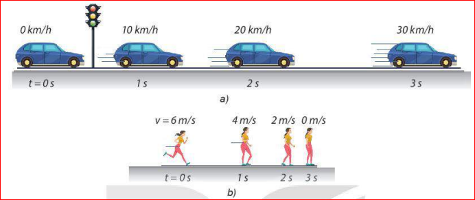
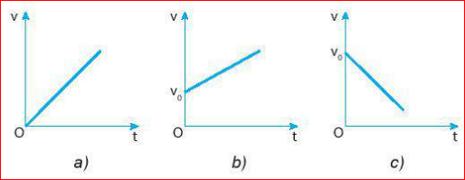
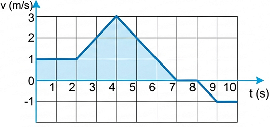
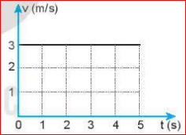
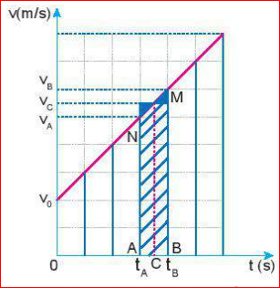
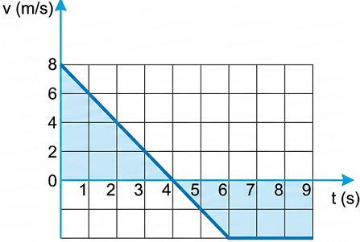
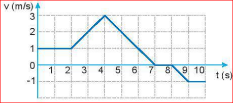

Hình minh họa xe và người chuyển động
Hình trên mô tả sự thay đổi vị trí và vận tốc của ô tô, người sau những khoảng thời gian bằng nhau. Hai chuyển động này có gì giống nhau, khác nhau?
Chuyển động thẳng biến đổi đều là chuyển động thẳng mà vận tốc có độ lớn tăng hoặc giảm đều theo thời gian.
Vì chuyển động thẳng biến đổi đều có vận tốc thay đổi đều theo thời gian nên gia tốc của chuyển động này không đổi theo thời gian:
\( a = \frac{\Delta v}{\Delta t} = \text{hằng số} \quad (9.1) \)
1. Tính gia tốc của các chuyển động trong hình vẽ ở đầu bài.
2. Các chuyển động trong hình vẽ ở đầu bài có phải là chuyển động thẳng biến đổi đều hay không?
Trả lời:
1.
- Gia tốc ô tô: \( a = \frac{10 - 0}{1} = 10 \text{ km/h.s} \)
- Gia tốc người: \( a = \frac{4 - 6}{1} = -2 \text{ m/s}^2 \)
2. Cả 2 chuyển động đều là chuyển động thẳng biến đổi đều (ô tô nhanh dần đều, người chậm dần đều) vì độ lớn gia tốc không đổi.
Gọi \( v_0 \) là vận tốc tại thời điểm ban đầu \( t_0 \); \( v_t \) là vận tốc tại thời điểm \( t \).
Vì \( a = \frac{\Delta v}{\Delta t} = \frac{v_t - v_0}{t - t_0} = \frac{v_t - v_0}{\Delta t} \) nên \( v_t = v_0 + a.\Delta t \).
Nếu ở thời điểm ban đầu \( t_0 = 0 \) thì:
\( v_t = v_0 + a.t \quad (9.2) \)
Nếu ở thời điểm ban đầu \( t_0 = 0 \) vật mới bắt đầu chuyển động thì \( v_0 = 0 \) và:
\( v_t = a.t \quad (9.3) \)
Các công thức (9.2) và (9.3) cho thấy vận tốc tức thời \( v \) trong chuyển động thẳng biến đổi đều là hàm bậc nhất của thời gian \( t \), nên đồ thị vận tốc - thời gian của chuyển động này có các dạng như Hình 9.1.

Hình 9.1. Các dạng đồ thị vận tốc - thời gian trong chuyển động thẳng biến đổi đều
1. Từ các đồ thị trong Hình 9.1:
2. Hình 9.2 là đồ thị vận tốc - thời gian trong chuyển động của một bạn đang đi trong siêu thị. Hãy dựa vào đồ thị để mô tả bằng lời chuyển động của bạn đó.

Trả lời:
1a) Hình a: \(v = at\) ; Hình b: \(v = v_0 + at\) (\(a>0\)); Hình c: \(v = v_0 + at\) (\(a<0\)).
1b) Hình a và b: Nhanh dần đều. Hình c: Chậm dần đều.
2. Mô tả: Từ 0-4s: Đi đều; 4-6s: Đi chậm lại và dừng lại; 6-7s: Đứng yên; 7-8s: Đi nhanh dần theo chiều ngược lại; 8-9s: Đi đều; 9-10s: Đi chậm lại.
Trong khoảng thời gian \( t \), nếu vật chuyển động thẳng đều với vận tốc \( v \), thì đồ thị có dạng như Hình 9.3a và độ dịch chuyển có độ lớn là: \( d = v.t \)
Độ lớn này bằng diện tích của hình chữ nhật, các cạnh có độ dài là \( v \) và \( t \). Diện tích này gọi là diện tích giới hạn của đồ thị (v-t) đối với trục hoành.
Trong thời gian \( t \), nếu vật chuyển động thẳng biến đổi đều với vận tốc ban đầu \( v_0 \), thì công thức tính vận tốc là \( v_t = v_0 + a.t \), đồ thị có dạng Hình 9.3b. Độ dịch chuyển có độ lớn bằng diện tích hình thang vuông.

a) Đồ thị (v-t) của CĐTĐ

b) Đồ thị (v-t) của CĐT BĐĐ
1. Hãy tính độ dịch chuyển của chuyển động có đồ thị (v-t) vẽ ở Hình 9.3b (biết mỗi cạnh vuông đứng = 2m/s, ngang = 1s).
2. Chứng tỏ rằng có thể xác định được giá trị của gia tốc dựa trên đồ thị (v-t).
Trả lời:
1. Độ dịch chuyển bằng diện tích hình thang. Áp dụng công thức tính diện tích hình thang \(S = \frac{(a+b)h}{2}\).
2. Gia tốc \(a = \frac{\Delta v}{\Delta t}\). Trên đồ thị v-t, tỉ số này chính là độ dốc (hệ số góc) của đường thẳng. Do đó có thể xác định gia tốc từ đồ thị.
1. Biết độ dịch chuyển có độ lớn bằng diện tích giới hạn đồ thị, hãy chứng minh:
2. Từ công thức (9.2) và (9.4) chứng minh rằng:
Hướng dẫn:
1. Diện tích hình thang = Diện tích hình chữ nhật (\(v_0.t\)) + Diện tích hình tam giác (\(\frac{1}{2}.t.(v_t - v_0)\)). Thay \(v_t - v_0 = a.t\) ta ra công thức (9.4).
2. Rút \(t = \frac{v_t - v_0}{a}\) từ công thức (9.2), thế vào công thức (9.4), khai triển hằng đẳng thức rồi rút gọn sẽ ra (9.5).
Hãy dùng đồ thị (v-t) vẽ ở Hình 9.4 để:

Giải:
a) 0-4s: Nhanh dần đều theo chiều dương. 4-6s: Chậm dần đều. 6-9s: Đứng yên.
b) Dùng diện tích hình học tính toán (tam giác, hình chữ nhật...).
c) \(a = \frac{\Delta v}{\Delta t} = \frac{v_4 - v_0}{4 - 0}\)
d) Tương tự câu c.
1. Đồ thị vận tốc - thời gian ở Hình 9.5 mô tả chuyển động của một chú chó con đang chạy trong một ngõ thẳng và hẹp.

a) Hãy mô tả chuyển động của chú chó.
b) Tính quãng đường đi được và độ dịch chuyển của chú chó sau: 2s; 4s; 7s và 10s bằng đồ thị và bằng công thức.
Giải:
a) Mô tả: Từ 0-2s: Chạy đều; 2-4s: Chạy nhanh dần; 4-7s: Chạy chậm dần đến dừng lại; 7-8s: Đứng yên; 8-9s: Chạy nhanh dần theo chiều ngược lại; 9-10s: Chạy đều theo chiều ngược lại.
b) Tính toán bằng cách tính diện tích các phần dưới đồ thị giới hạn bởi trục hoành đối với từng khoảng thời gian tương ứng. Quãng đường tính bằng độ lớn diện tích, độ dịch chuyển xét dấu của diện tích.
2. Một vận động viên đua xe đạp đường dài vượt qua vạch đích với tốc độ \( 10 \text{ m/s} \). Sau đó vận động viên này đi chậm dần đều thêm 20 m mới dừng lại. Coi chuyển động của vận động viên là thẳng.
a) Tính gia tốc của vận động viên trong đoạn đường sau khi qua vạch đích.
b) Tính thời gian vận động viên đó cần để dừng lại kể từ khi cán đích.
c) Tính vận tốc trung bình của người đó trên quãng đường dừng xe.
Giải:
Ta có: \( v_0 = 10 \text{ m/s}, v = 0, d = 20 \text{ m} \)
a) Áp dụng \( v^2 - v_0^2 = 2ad \Rightarrow a = \frac{0^2 - 10^2}{2 \times 20} = -2.5 \text{ m/s}^2 \)
b) Áp dụng \( v = v_0 + at \Rightarrow t = \frac{0 - 10}{-2.5} = 4 \text{ s} \)
c) \( v_{tb} = \frac{d}{t} = \frac{20}{4} = 5 \text{ m/s} \)
Từ đồ thị vận tốc - thời gian của chuyển động thẳng biến đổi đều mô tả được chuyển động này.
Bài 1: Một ô tô bắt đầu rời bến chuyển động thẳng nhanh dần đều với gia tốc \( 2 \text{ m/s}^2 \). Tính vận tốc của ô tô sau 5 giây.
Bài 2: Một đoàn tàu đang chạy với vận tốc \( 20 \text{ m/s} \) thì hãm phanh, chuyển động thẳng chậm dần đều và dừng lại sau 10 giây. Tính gia tốc và độ dịch chuyển của tàu trong thời gian hãm phanh.
Bài 3: Một vật chuyển động có phương trình độ dịch chuyển là \( d = 5t + 2t^2 \) (m, s). Hãy xác định vận tốc ban đầu, gia tốc của vật và vận tốc của vật lúc \( t = 2 \text{s} \).